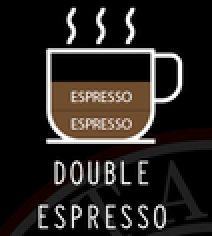
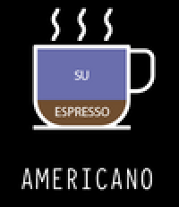
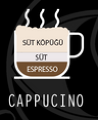
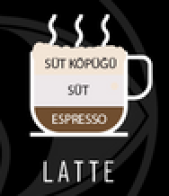
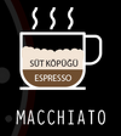
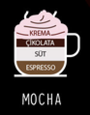
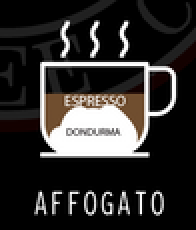

Espresso Bazlı Kahve Çeşitleri
Espresso, İtalya’da ortaya çıkan ve basınç gücünden yararlanılarak yapılan sert ve yoğun bir kahve türüdür. Yurt dışı kaynaklı kahveler arasında Türk kahvesine en çok benzeyen türdür.
|
|
Saf Espresso. |
|

|
İki kat yoğunlaştırılmış espresso. |
|

|
Americano, espressoyla sıcak su karışımından
oluşur. İkinci Dünya savaşı sırasında Amerikan
askerlerinin espressoyuçok acı bulup üzerine su
eklemesiyle bulunmuş ve tüm dünyaya yayılmıştır. |
|
|
Flat white, kahve aromasının daha yoğun hissedilmesi
için icat edilen bir espresso bazlı içecektir. Latteden farkı
double shot espresso kullanılması ve krema tabakasının
daha ince olmasıdır. İlk olarak Avustralya’da yapılmış ve
buradan tüm dünyaya yayılmıştır. |
|

|
Cappucino için latteyle beraber en meşhur iki espresso
bazlı içecekten biri diyebiliriz. Bir shot espressoya süt
eklenerek yapılır. En büyük özelliği köpüklü olmasıdır,
bu yüzden sütten elde edilen köpüğü olmazsa olmazıdır. |
|

|
Latte, en meşhur espresso bazlı içecektir. Cappucinoda da olduğu gibi süt ve kahvenin bir araya gelmesiyle elde edilir, dolayısıyla yumuşak içimlidir. Cappucinoyla arasındaki en büyük fark lattenin köpüksüz olmasıdır. |
|

|
Macchiatonun latteden farkı cam bardakta servis edilmesidir. Daha büyük hacimli (200-220 ml.) bardaklar kullanılır. Bu yüzden daha fazla süt içerir ve işin lezzetten ziyade görsel yönünü ilgilendiren üç katmandan oluşur. |
|

|
Mocha, latteye eritilmiş çikolata eklenerek yapılan bir kahve türüdür. Fincanın 1/3’ünü bitter çikolata kaplarken; kalanı espresso, süt ve süt köpüğünden oluşur.Çikolatayla da yapılabilir. |
|

|
Özellikle yaz aylarında ön plana çıkan, dondurma üzerine espresso eklenmesi ile elde edilen espresso bazlı bir yiyecektir.
Affogatoda vanilyalı dondurma kullanılması gerekir.
Bir top dondurma üzerine tek shot espresso eklenerek hazır hale getirilir. Soslar ile süsleme yapılabilir. 120 ml’lik cam bardakta, küçük bir kaşıkla beraber servis edilir.
|
|
|
Espressoyla aynı kahve gramajıyla, ancak daha az suyla hazırlanan çok sert bir kahve türüdür. |
Filtre Kahve Çeşitleri
Kahve çekirdekleri yetiştirildiği bölgenin yükseltisine ve toprak yapısına göre tat farklılığı gösterir, filtre kahve çeşitleri yetiştiği bölgeye göre belirlenir. Filtre kahve çeşitleri aslında kahve çekirdeğinin yetiştirildiği gölgedir ve her kahvenin kendine has aroması vardır.

|
KOLOMBİYA KAHVESİ:
En çok tercih edilen filtre kahve çeşitleri içerisindedir. Asiditesi ortadır, aroma olarak fındık, çikolata ve meyve notalarına sahiptir. Brezilya’dan sonra kahve üretiminde Kolombiya ikinci sırada gelmektedir. Colombia kahvesi 3 bölgeye ayrılır; Kuzey, Merkez ve Güney bölgeleri. |

|
BREZİLYA KAHVESİ:
Brezilya kahve çekirdeği üretiminde birinci sıradadır. Asiditesi düşük seviyededir ve tarçın notalarına sahiptir. En sevilen kahvelerden biri olan Brezilya kahvesinin 4 yetiştirme bölgesi vardır. Kahve yetiştiriciliği yapılan bölgeler Minas Gerais, San Paulo, Bahia ve Espirito Santo’dur. |

|
GUATEMALA KAHVESİ:
Guatemala kahvesi dünyada en çok tercih edilen kahve türlerinden biridir. Nemli topraklarda yetişen Guatemala kahvesinin doğal asidite değeri yüksektir. Kahvelerde baskın olarak çikolata, fındık ve acı kakao aromaları hissediliyor. |

|
ETİYOPYA KAHVESİ:
En lezzetli filtre kahve çeşitleri sıralamasının ilk sıralarına Etiyopya kahvesi girer diyebiliriz. Etiyopya’nın farklı bölgelerinde kahve yetiştiriliyor. Fakat en bilinenler; Kochere, Yirgacheffe ve Sidamo’dur. |
Geleneksel Kahve Çeşitleri
Geleneklerimiz arasında önemli bir yeri olan Türk kahvesi kültürümüzü yansıtan bir içecektir. Süvari, menengiç, mırra, dibek kahvesi gibi Türk kahvesi çeşitleri arasından sevdiğiniz bir lezzeti bulabilirsiniz.

|
TÜRK KAHVESİ:
Türk kahvesi, daha çok Türk kültüründe önemli yere sahip Osmanlı İmparatorluğu'dan günümüze kadar gelmiş en eski kahve hazırlama ve pişirme metotlarındandır. Kendine has tadı, köpüğü, kokusu, sunuluş biçimiyle özgün bir kimliği ve geleneği vardır. Telvesi ile ikram edilen tek kahve türüdür. |

|
MENENGİÇ KAHVESİ:
Menengiç kahvesi ya da Kürt kahvesi, Latincesi pistacia terebinthus denilen Menengiç ağacından üretilen ve Türkiye'de Akdeniz, Güneydoğu Anadolu Bölgesi ve İç Anadolu bölgelerinin dağlık kırsal bölgelerinde ekimi yapılmaksızın doğal olarak yetişmektedir. |

|
DİBEK KAHVESİ:
Bildiğimiz kahveye göre öğütülme şekli farklı olan dibek kahvesinde kahve çekirdekleri tahta ya da taştan yapılmış dibek denilen havanlarda dövülür. Türk kahvesinin yoğun kıvamlı olanı, ancak yumuşak bir lezzeti olan dibek kahvesi kahve sevenleri meste eder. |

|
MIRRA:
Türk kahvesinin sunumu küçük kulplu fincanlara yapılır. Mırra ise kulpsuz daha küçük bardaklarda ikram edilir. Bu kahve çeşidinin özelliği birkaç defa demlenmesidir. Uzun bir demleme sürecinin ardından ibriklerle ikram edilen mırra acı ve sert tadıyla, zahmetli yapımıyla özel günlerin kahvesi olarak tüketiliyor. |
This website is created by Esra Daşdan.
1306200004.